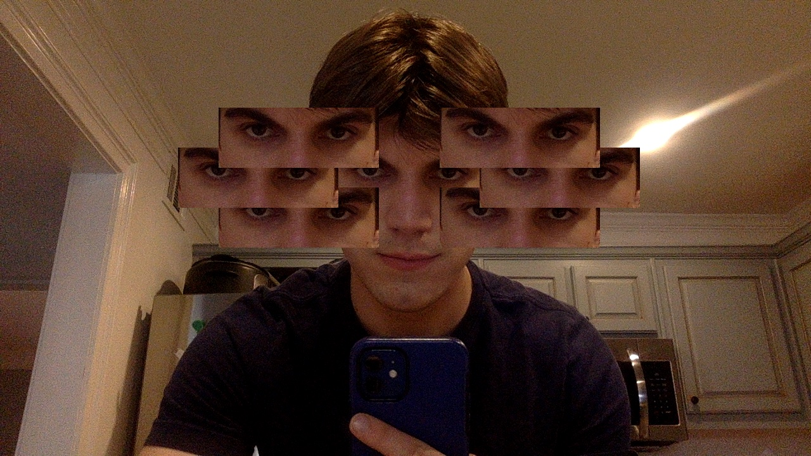
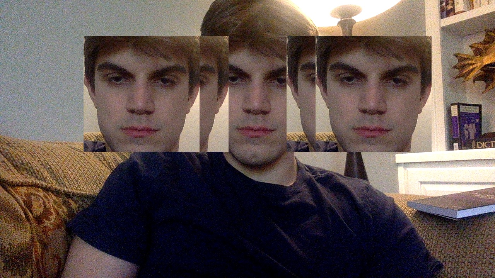
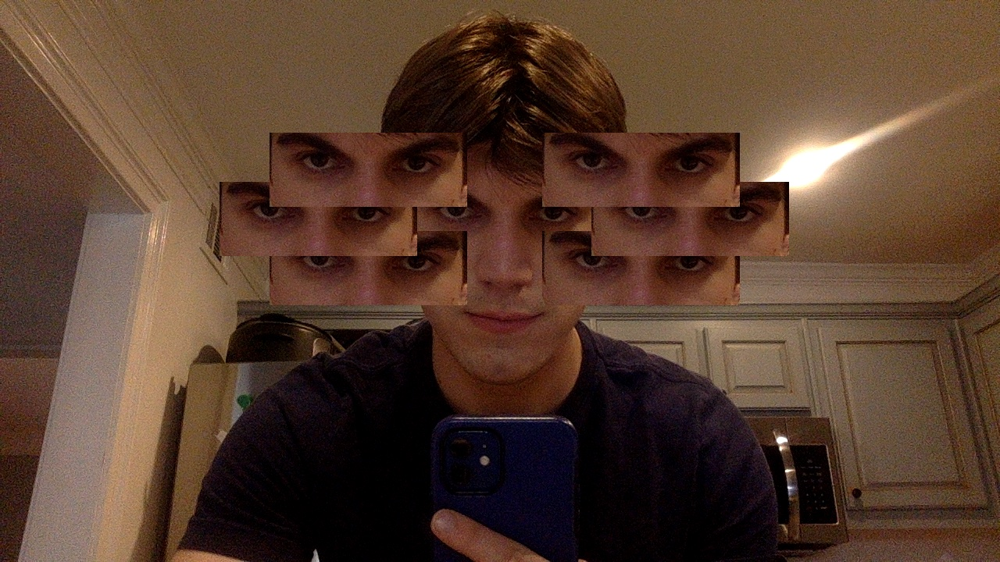
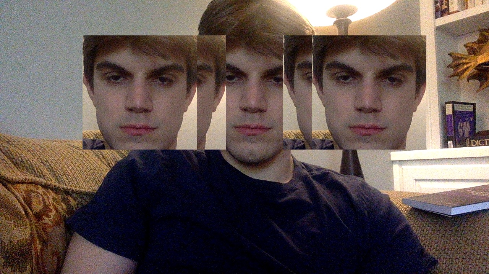

- 1. Import Image & ImageTools from PIL / Pillow
- PIL (Python Imaging Library) is a free library for the Python programming language that supports image processing and camera functionalities. This library is the true bread and butter of this project, as we’ll be using this program to take a photo through the computer’s webcam, detect faces in that photo, and finally edit the photo to our heart’s content
- from PIL import Image #Download Pillow
import ImageTools #Download ImageToolsMadeEasy - 2. Take a photo using ImageTools
- #Take photo of user
camera = ImageTools.Camera()
img = camera.take_photo() - 3. Utilize ImageTools.get_faces() function to identify faces in the captured image
- For the face detection function to work, you must supply a file path to a haarcascade file. You can obtain the relevant file from here.
- This function returns a list of lists. The outer list represents the number of faces seen, and the inner list gives the coordinates of the individual face in each image. The provided coordinates outline the face as follows:
[X-coordinate of the top left corner of the face, Y-coordinate of the top left corner of the face, width of the face, height of the face] - #ID face of user photo
faces = ImageTools.get_faces(img, "haarcascade_frontalface_default.xml") - 4. Crop a section of the original image using the provided coordinates and the .crop() function. Alter the cropping as desired and save this as a seperate image.
- for face in faces:
x, y, w, h = face
face_only = img.crop((x+0.1*w, y+0.2*h, x+0.9*w, y+0.5*h)) - 5. Use the .paste() function to overlay the new, cropped image on top of the original image in whatever fashion you choose
-
xMidRight = (x+ 0.5*w) + 0.35*w
xMidLeft = (x+ 0.5*w) - 1.15*w
xOutRight = (x+ 0.5*w) + 0.15*w
xOutLeft = (x+ 0.5*w) - 0.95*w
yMiddle = y + h* 0.2
yTop = y
yBottom = y + h*0.4
img.paste(face_only, (xOutRight.astype(int), yBottom.astype(int)))
img.paste(face_only, (xOutLeft.astype(int), yBottom.astype(int)))
img.paste(face_only, (xMidRight.astype(int), yMiddle.astype(int)))
img.paste(face_only, (xMidLeft.astype(int), yMiddle.astype(int)))
img.paste(face_only, (xOutRight.astype(int), yTop.astype(int)))
img.paste(face_only, (xOutLeft.astype(int), yTop.astype(int)))
 


